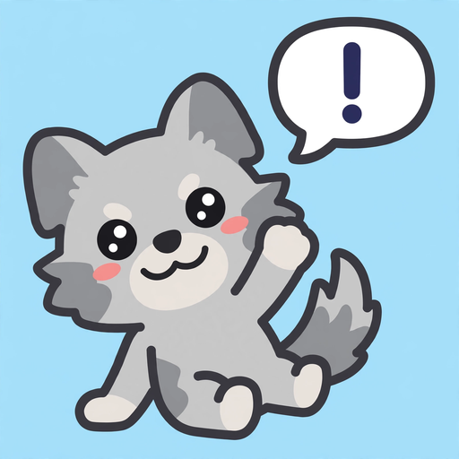
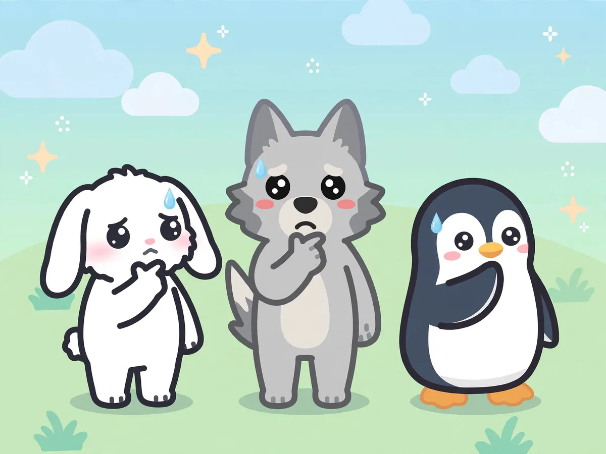
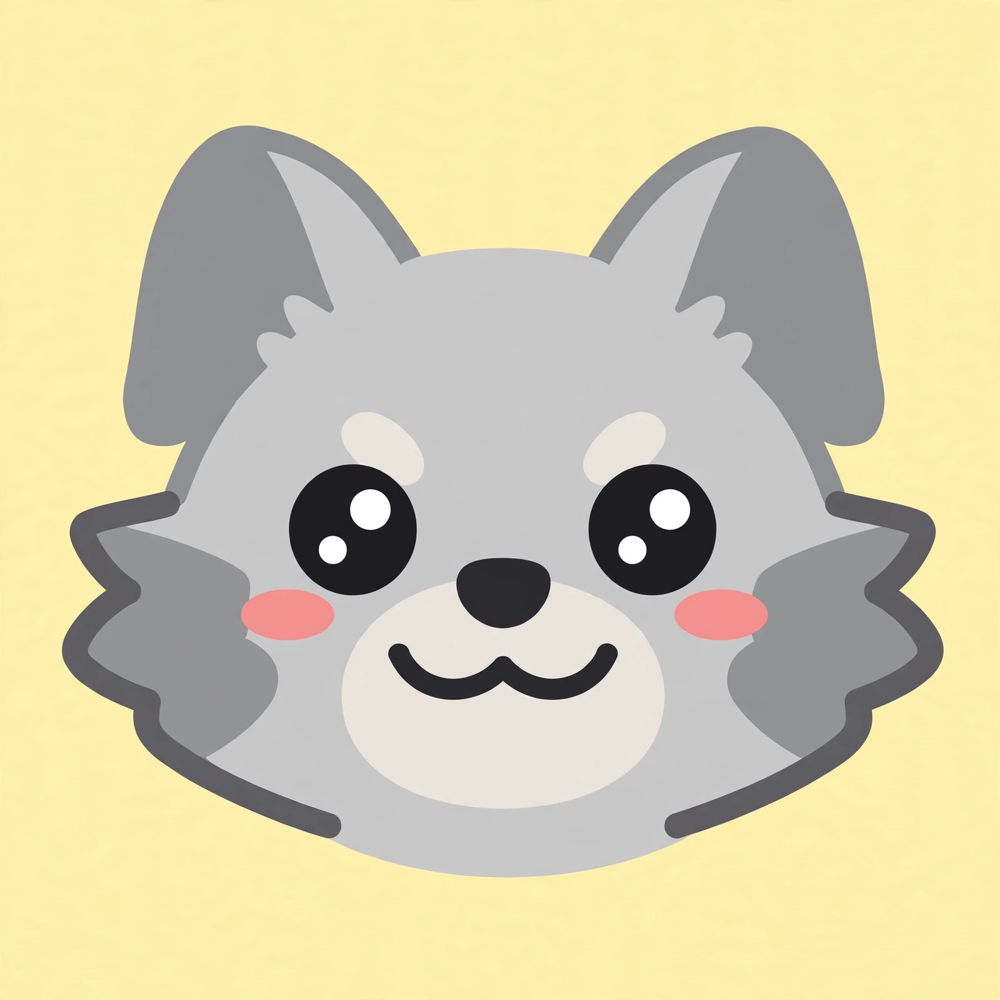
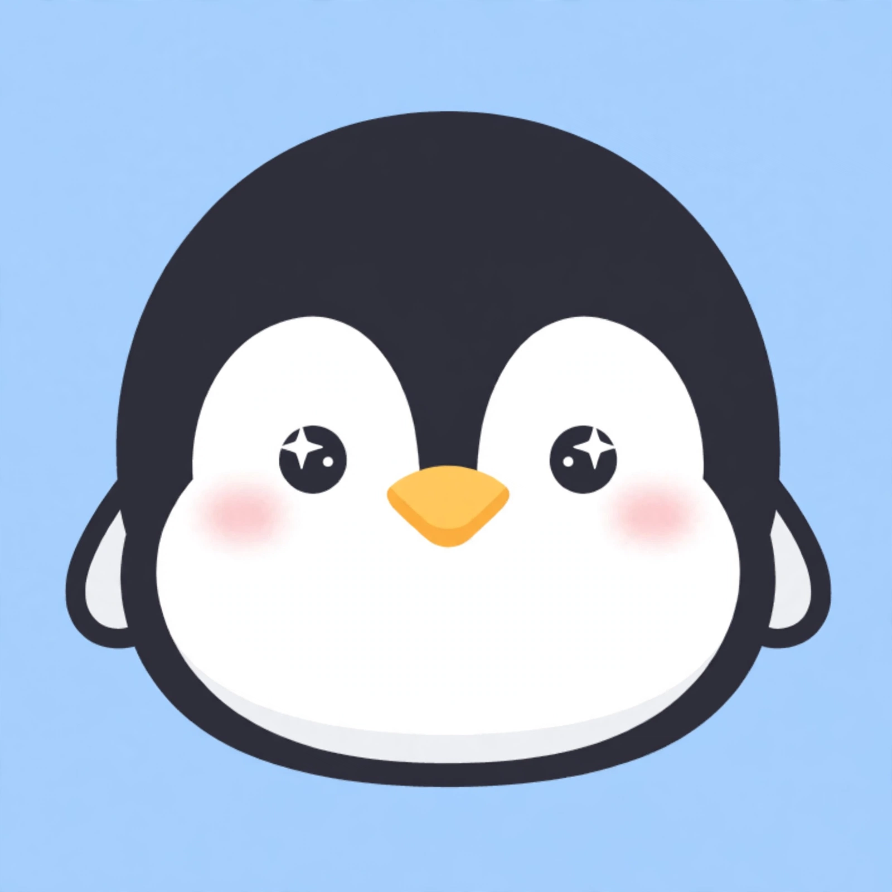
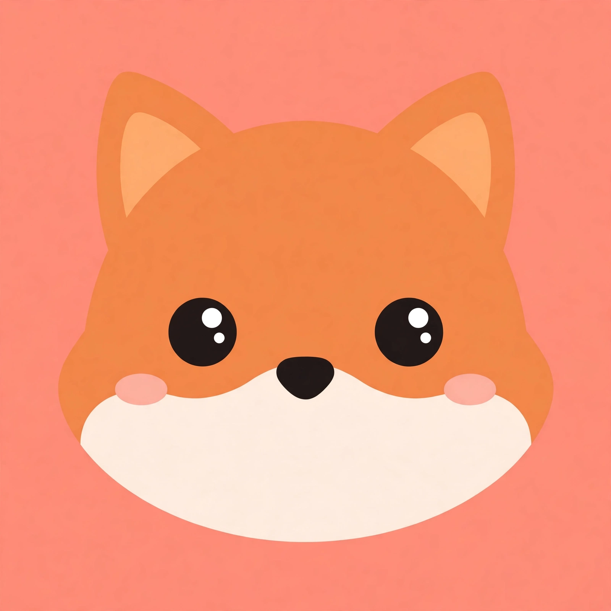

みんなと話して、ウルフを見つけよう。
テキストだけで遊べる、簡単ワードウルフ。
ボイスなしだから、場所を選ばずいつでも遊べます。
Googleアカウントでログインして遊べます（Google Play版も準備中）
ことば人狼の特徴
💬
テキストだけ
ボイスチャットはなし。チャットで話し合うだけだから、初心者でも安心。
👥
4〜8人で対戦
フレンドと部屋を作って遊ぶのはもちろん、ランダム入室ですぐに遊べます。
✉️
DM・グループチャット
フレンドとの個人チャットやグループチャットで、対戦の前後も盛り上がれます。
🎁
ギフトを贈れる
活躍した相手にギフトをプレゼント。もらったギフトは人気度に反映されます。
遊び方
-
1
お題が配られます。全員に同じお題……ただし1人だけ、ちょっと違うお題。それがウルフです。自分がウルフかどうかは、まだ誰にも分かりません。
-
2
話し合って探ります。お題について話し合ううちに、話がかみ合わない人が見えてきます。自分がウルフだと気づいたら、うまく話を合わせましょう。
-
3
投票でウルフを当てる。市民がウルフを当てれば市民の勝ち。でもウルフも、正体がバレたあとに市民のお題を当てれば逆転勝ちできます。

かわいいアイコンがいっぱい



アイコンは選ぶだけ。対戦に勝つと解放されるアイコンもあります。
安心して遊べます
- 13歳から遊べます（年齢に合わせた課金上限つき）
- 通報・ブロック機能で、困った相手とは距離を置けます
- 不適切な言葉は自動チェックで送信を止めます